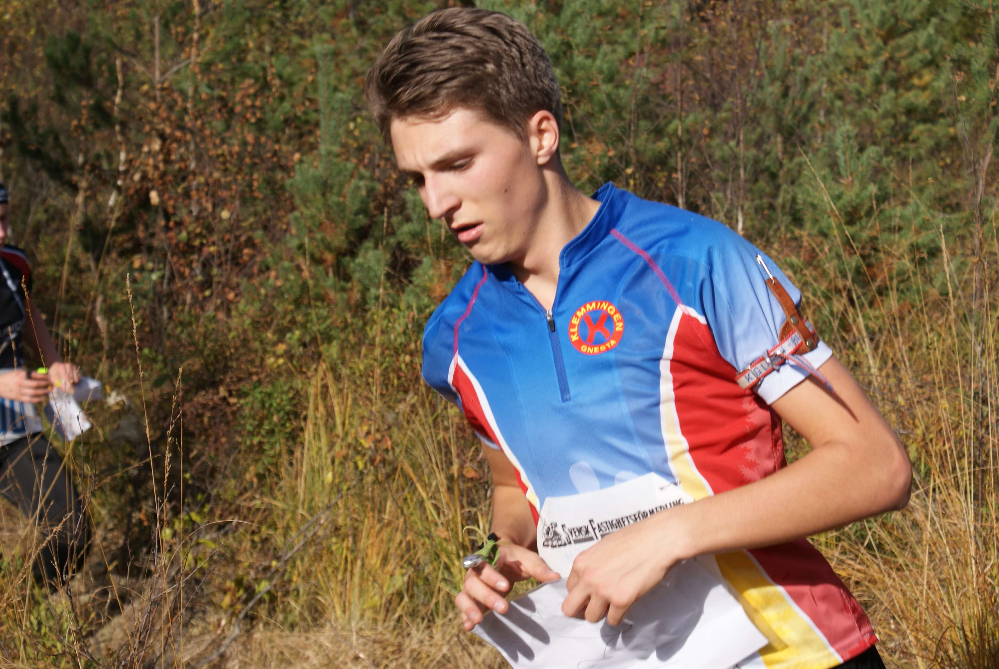

OM MIG
Om mig
Namn: Johan Hagströmer
Född: 2 Juni 1998
Klubb: OK Klemmingen
Orienterat sedan: 2003
Orienteringsskytte sedan: 2011
Bor: Björnlunda

SM Massstart 2015
Resultat - Junior
WBOC (World Biathlon Orienteering Championship)
Individuella medaljer: 2 Guld, 1 Silver
2016: Tjeckien. Sprint DSQ, Klasiskt 1a, Stafett 1a
2015: Finland. Sprint 1a, Klasiskt 2a, Stafett 1a
2015: Tyskland. Sprint 9a, Klasiskt 5a, Stafett 5a
SM
Individuella medaljer: 2 Guld, 1 Silver
2016: Klasiskt 1a
2015: Sprint 1a, Massstart 2a